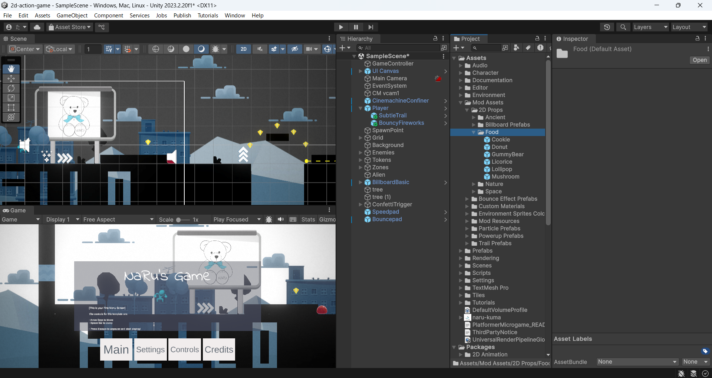
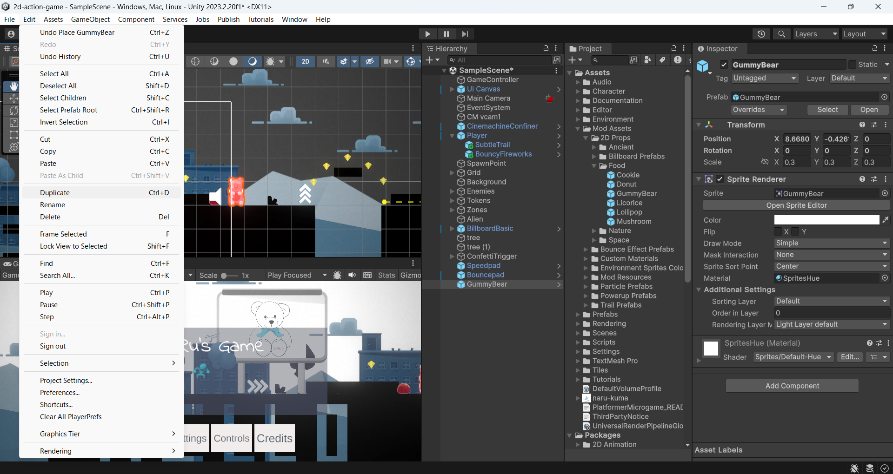
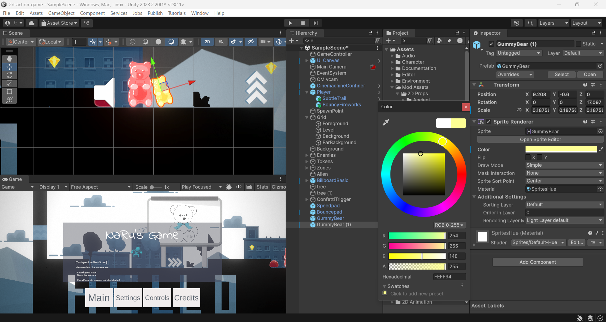

仕上げて発表しよう 〜ワールドを飾って、自分だけの作品に〜
ついに最終回。
今日はワールドに小物を飾りつけて、オブジェクトの追加・複製・移動・拡大・回転・色変えという編集の基本ワザをひと通りマスターします。
そのあとは自由カスタマイズタイム。
これまで学んだことを全部使って、自分だけのゲームに仕上げて、最後にみんなで見せ合います。
🎯 この章でできるようになること
- プレハブをシーンビューにドラッグしてオブジェクトを追加（インスタンス化）できる
Ctrl + D⌘ + Dでオブジェクトを複製できる- 移動・拡大縮小・回転の3つのツールを使い分けられる
- Sprite Rendererでオブジェクトの色を変えられる
- 自分のテーマを決めて、ワールドを自由にカスタマイズできる
まずは前回まで改造してきたプロジェクトをUnity Hubから開こう。
途中がうまくいっていない人も大丈夫、最初にみんなで確認するよ。
6-1. ワールドを装飾しよう
ゲームの中身（動き・しかけ）はもう十分そろってきました。
最終回のテーマは「見た目の仕上げ」です。
小物オブジェクトを追加・編集して、世界をよりにぎやかに、楽しく彩っていきます。
使うワザは次の6つ。
どれもゲーム作りで一生使い続ける基本ワザです。
追加して、増やして、配置を整えて、色を変える
6-2. オブジェクトを追加しよう 〜インスタンス化〜
プロジェクトウィンドウで、Mod Assets → 2D Props → Food の順に選択します。
お菓子や食べものの小物プレハブがずらっと並んでいるよ。

GummyBear（グミベア）のプレハブを選択して、シーンビューにドラッグしてワールドに追加します。
このように、設計図（プレハブ）から実物をシーンに作り出すことを「インスタンス化」や「インスタンスを作成する」と呼びます。
これまでの章でも、しかけやパワーアップをシーンにドラッグして置いてきたね。
あれも全部インスタンス化だったんだ。
1つの設計図から、何個でも実物を作れる。
6-3. オブジェクトを複製しよう
同じ飾りをたくさん並べたいとき、毎回ドラッグしてくるのは面倒。
そんなときは複製（Duplicate）の出番です。
ヒエラルキーで GummyBear を選択します。
メニューの「Edit → Duplicate」を選ぶか、ショートカット Ctrl + D⌘ + D を押します。
ヒエラルキーに GummyBear (1) のような名前のコピーが増えたら成功。

ショートカットは Ctrl + D⌘ + D
💡 複製されたコピーは元とまったく同じ位置に重なって生まれます。
「増えてない？」と思ったら、次の移動ツールでずらしてみよう。
6-4. オブジェクトを移動しよう
ヒエラルキーで GummyBear を選択したまま、ツールバーのMove（移動）ツールを選択します。
オブジェクトに赤と緑の矢印が表示されるので、矢印をドラッグして好きな場所へ動かそう。
赤い矢印は横（X）、緑の矢印は縦（Y）方向だけに動かせるよ。
6-5. オブジェクトを拡大・縮小しよう
ツールバーのScale(拡大縮小)ツールをクリックします。
中央のグレイの四角をドラッグすると、GummyBear全体をそのままの形で拡大縮小できます。
各矢印（赤＝X、緑＝Y）をドラッグすれば、横だけ・縦だけ、1つの軸に沿って引き伸ばすこともできるよ。
💡 巨大グミベアも、ミニチュアグミベアも思いのまま。
大きさを変えるだけで、ワールドの印象はガラッと変わる。
6-6. オブジェクトを回転させよう
ツールバーのRotate（回転）ツールをクリックします。
オブジェクトのまわりに球形のハンドル（円形のライン）が表示されるので、ラインをドラッグしてグミベアを回転させてみよう。
横倒しにして、グミベアが側面で立っているようにもできる。
6-7. オブジェクトの色を変えよう
色を変えたいオブジェクトを選択して、インスペクターの Sprite Renderer の下にある Color プロパティをクリックします。
カラーホイールが開くので、好きな色を選びます。
選んだ瞬間にシーンのオブジェクトの色が変わるよ。
同じグミベアでも、色を変えて並べればカラフルなグミの行列が作れる。

Colorを変えると、元の絵に色が重ねがけされて見た目が変わる。
6-8. 自由カスタマイズタイム
基本ワザはこれで全部そろいました。
ここからは自由にカスタマイズする時間です。
小さな改造から、あなたらしいゲームの世界が広がります。
ぜひ自由な発想で、作品づくりを楽しんでください。
使える道具は、この6回でこんなにたまっています。
| 道具 | できること |
|---|---|
| 2DProps（Foodなど）の小物 | ワールドを飾る。 追加・複製・移動・拡大・回転・色変えは今日の基本ワザ |
| トレイル（軌跡） | プレイヤーの動きに残像の演出をつける |
| 色合い（Tint）ゾーン | エリアごとに世界の雰囲気をがらっと変える |
| パーティクル・エフェクト | 火花などのきらびやかな演出を足す |
| カスタムトリガー | 「触れたら何かが起きる」しかけを作る |
| Speed Pad / Bounce Pad | スピード感と大ジャンプでコースを楽しくする |
迷ったら、まず「テーマ」をひとつ決めるのがおすすめ。
テーマが決まると、どこに何を置くか自然と決まっていくよ。
次の「やってみよう」にアイデア集があります。
6-9. 💪 やってみよう: 自由制作アイデア集
次のテーマ例から1つ選んでもいいし、自分で思いついたテーマならもっといい。
「これ、どうやるんだっけ？」となったら、前の章のページに戻って確認しながら進めよう。
テーマ例1: お菓子の国コース
Foodフォルダの小物を総動員して、ステージ全体をお菓子の国にしよう。
巨大グミベアの山、色違いグミの行列、逆さづりのドーナツ……拡大・回転・色変えの練習にぴったり。
テーマ例2: 超高速スピードランコース
Speed PadとBounce Padをたくさん並べて、最初から最後まで走りっぱなし・跳びっぱなしの爽快コースを作ろう。
パッドのパラメーターを調整して、気持ちいいスピード感を探そう。
テーマ例3: エリアごとに世界が変わる冒険コース
色合い（Tint）ゾーンを使って、「昼の草原 → 夕焼けの谷 → 真っ暗な洞窟」のように、進むたびに雰囲気が変わるステージにしよう。
エリアごとに置く小物も変えると、もっとそれっぽくなる。
テーマ例4: びっくりしかけハウス
カスタムトリガーを使って、「触れたら何かが起きる」しかけをたくさん仕込もう。
どこに何が隠れているかわからない、遊ぶ人を驚かせるステージに。
テーマ例5: 激ムズアスレチック
足場の間隔をぎりぎりにしたり、Bounce Padの跳ね方を調整したり、クリアできるかできないかの限界に挑戦するコースを作ろう。
ただし「作った本人はクリアできる」のがルール。
必ず自分でテストプレイしよう。
テーマ例6: 物語のあるワールド
「主人公は迷子のグミベアを探しに行く」など、自分でお話を決めてから飾りつけよう。
ゴール地点に大切なものを置くだけでも、ぐっと物語が生まれるよ。
6-10. 発表タイム 〜見せ合いの心得〜
カスタマイズができたら、いよいよ発表です。
おたがいの作品を交換して遊び合おう。
発表と見せ合いには、ちょっとした「心得」があります。
- 作った人: 工夫したポイントを一言で紹介しよう。
「お菓子の国にした」「トリガーでびっくりしかけを作った」など、ひとことでOK。 - 遊ぶ人: 遊び終わったら、良いところを必ず1つ言葉にして伝えよう。
「この大ジャンプ気持ちいい」「色づかいがきれい」なんでもいい。
作った人にとって、いちばんのごほうびになる。 - 直したほうがいいところを言うときは、良いところを言ったあとで。
言い方は「こうしたらもっと面白いかも」の形にしよう。 - うまくできなかった部分があっても大丈夫。
「ここまでできた」を堂々と発表しよう。
バグも立派な発見のひとつ。
6-11. 🚨 つまずきポイント集
ドラッグしたのにオブジェクトが見つからない
原因: シーンビューの表示範囲の外や、カメラに映らない遠くに置いてしまった。
直し方: ヒエラルキーでそのオブジェクトを選んで、シーンビューにマウスを置いたまま F キーを押すと、一気にそのオブジェクトまでズームしてくれる。
複製したはずなのに増えて見えない
原因: 複製されたコピーは元とまったく同じ位置に重なって生まれるので、見た目は1個のまま。
直し方: ヒエラルキーを見ると GummyBear (1) が増えているはず。
Moveツールでドラッグしてずらそう。
色を変えたのに何も変わらない
原因: 別のオブジェクトを選んだまま操作している。
または、Sprite Rendererではない場所のColorを変えている。
直し方: ヒエラルキーで色を変えたいオブジェクトが選ばれているか確認して、インスペクターのSprite RendererのColorを変えよう。
操作をまちがえてぐちゃぐちゃになった
原因: 移動・拡大・回転のやりすぎは誰にでもある。
直し方: あわてず Ctrl + Z⌘ + Z（元に戻す）。
何回でもさかのぼれるので、失敗をおそれずどんどん試そう。
せっかく置いた飾りが消えた
原因: ▶（再生中）のまま編集していた。
再生中の変更は、停止するとぜんぶ元に戻ってしまう。
直し方: 編集は必ず再生を止めてから。
Unityあるあるナンバーワンのミス、最終回でももう一度注意！
6-12. 🤖 AIを味方につけよう
最終回だからこそ伝えたいこと。
ここから先は、教科書に載っていない「自分だけのアイデア」を形にしていくフェーズです。
そんなときこそAIが頼れる相棒になります。
「まず自分で15分考える」「AIの答えは必ず自分の画面で確かめる」の2つの原則は、これからもずっと大事にしよう。
この章でのAIの使い所
✅ 良い使い方 — アイデア出しの壁打ちや、操作に迷ったときの調べものに使う
- アイデアの壁打ち: 自分のテーマを伝えて、飾りつけや構成のアイデアを広げてもらう
- 操作の調べもの: 「Unityでこういうことをしたいけど、どのツール・どの設定？」を聞く
そのままコピペで使えるプロンプトの例:
遊ぶ人が「おっ」と思うような飾りつけや演出のアイデアを、Unityの基本操作（オブジェクトの配置・拡大・回転・色変え）でできる範囲で5つ提案してください。
初心者でもできる方法を、手順を追って教えてください。
🚫 やめておこう
- テーマ決めから飾りつけまで、ぜんぶAIの言うとおりに作る（あなたらしさが作品から消えてしまう）
- AIの答えをそのまま信じる（AIは古いバージョンのUnityの話をすることがある。
必ず自分の画面で確認しよう）
6-13. ✅ チェックリスト
6-14. 🎓 コース修了、おめでとう！
全部チェックできたら第6章クリア。
🎉 そして全コース、完走です。
お疲れさま！
最初はただのサンプルゲームだったPlatformer Microgameが、今はもう、世界にひとつだけの「自分の作品」になりました。
名前を付けて、色を変えて、しかけを仕込んで、飾りつけて——ぜんぶ自分の手でやってきたことです。
ゲーム作りに「完成」はありません。
これからも遊びながら、直しながら、アイデアを試しながら、作品を育てていってね。
次の一歩に迷ったら、こんな道しるべがあるよ。
- Unity Learn — Unity公式の無料学習サイト。
今回遊んだPlatformer Microgameのほかにも、カートレースやFPSなどのマイクロゲームがあって、同じように改造しながら学べる - Unity 公式マニュアル（日本語） — ツールやコンポーネントの詳しい説明を調べたいときの辞書がわり
- 今回のゲームをさらに改造して、家族や友達に遊んでもらおう。
遊んでくれた人の「ここが面白い」「ここが難しい」は、次の作品への最高のヒントになる - 慣れてきたら、スクリプト（プログラム）で自分だけのしかけを作ることにも挑戦してみよう。
Unity LearnにはC#プログラミングの入門コースもあるよ
ここまで走りきったキミなら、もう自分で調べて、試して、直していく力がついているはず。
次の作品で、もっとすごい世界を見せてください。
またどこかで、キミの作ったゲームで遊べる日を楽しみにしています！